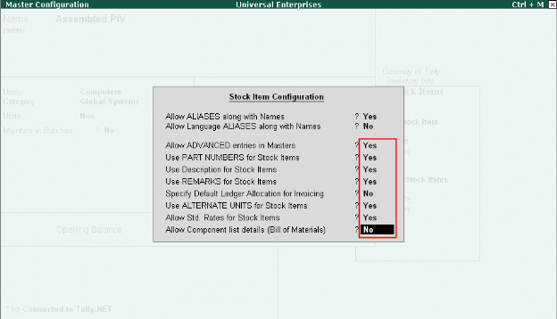
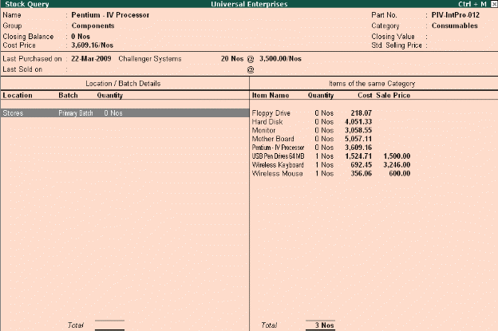

Stock Query
Stock query offers an option for the user to get a good idea of what is the stock position of a particular item as well as items that belong to the same category or group. The stock query report displays not only the item but also items within the same category or group. It displays the Stock Item details such as closing stock quantities and value and also in which Godown it is available, standard selling price, Last purchase and sale quantity and prices, batch details.
In F12: Configure screen of the Stock Item, activate all the related parameters to Yes
To view Stock Query Report,
Go to Gateway of Tally > Display > Statements of Inventory > Stock Query
# Select Item from List of Items, the Stock Query report will appear

# Select F4 (Item) to change to another item or use arrow keys to move to the category pane to select another item displayed
The Stock Query report provides you all details of closing balances & value, cost, standard and last sale prices, purchase costs and dates. In addition, activate these parameters in F12: Configure to see details like Remarks, Part No with alias;
# Show Related items of same Group to Yes
# Show all Aliases of the item to Yes
# Show Remarks of the item to Yes